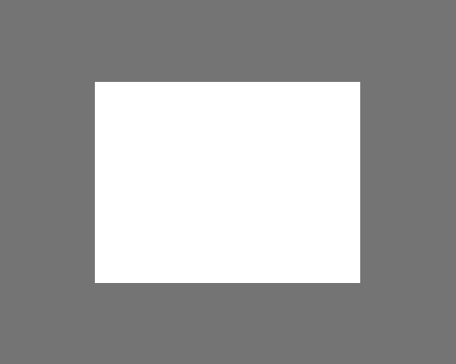

Instruction :
Placer la sourie dans la zone de crop
1 clique permet de déplacer l'image
1 autre clique figera l'image
Quelques détails projet :
Taille du viseur utilisée : width 291px / height 221px (mesuré sur photoshop)
Le script PHP utilise GD pour la manipulation des images
Le fichier crop.php contient le code qui crop l'image et la renvoie pour téléchargement
Il est possible d'exécuter un test en ligne de commande "php crop.php > testcrop.gif", ce test réalise une image 291*221 à partir des coordonnées x = 20 et y = 13 de l'image fond.jpg
Environ 3 heures de réalisation
